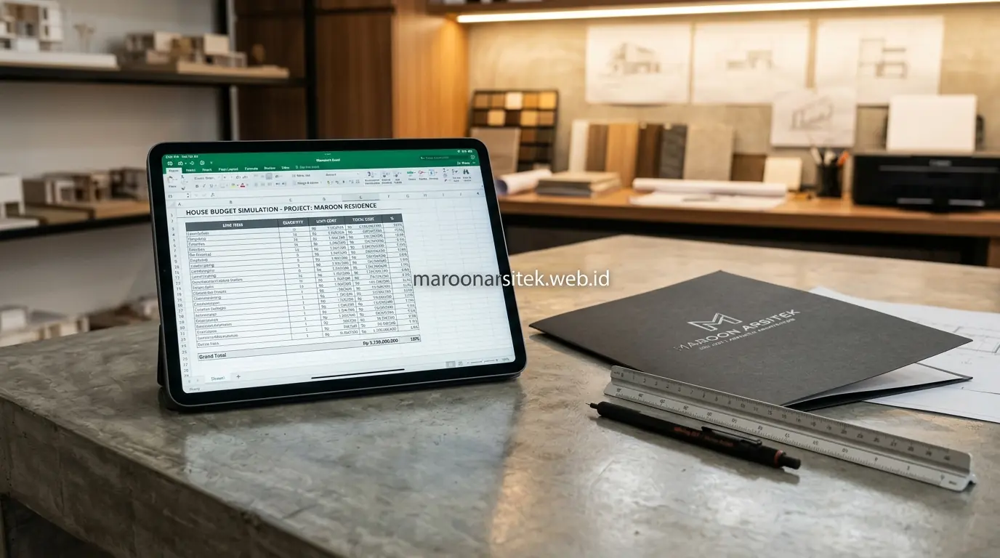

Cara menghitung biaya bangun rumah secara kasar dapat dilakukan dengan memahami proporsi umum setiap komponen biaya, seperti struktur, arsitektur, dan mekanikal elektrikal, kemudian menerapkannya pada estimasi total anggaran yang direncanakan sebelum berkonsultasi dengan kontraktor. Maroon Arsitek membantu pemilik lahan memahami logika proporsi ini melalui layanan jasa kontraktor rumah sebagai langkah awal sebelum penyusunan RAB yang lebih rinci.
Banyak pemilik lahan kesulitan memperkirakan anggaran karena tidak memahami bagaimana biaya total terbagi ke dalam berbagai komponen konstruksi. Bagian berikut menguraikan proporsi umum komponen biaya beserta langkah simulasi cepat yang dapat diterapkan secara mandiri.
Proporsi Umum Komponen Biaya dalam Total Anggaran Bangun Rumah
Total anggaran bangun rumah umumnya terbagi ke dalam beberapa komponen utama, yaitu struktur, arsitektur atau dinding dan atap, mekanikal elektrikal plumbing, dan finishing, dengan masing-masing komponen memiliki porsi yang berbeda tergantung jenis dan spesifikasi rumah yang dibangun. Memahami proporsi ini membantu pemilik lahan memperkirakan alokasi anggaran secara lebih terstruktur.
Komponen struktur umumnya menjadi fondasi anggaran yang harus dipastikan terpenuhi terlebih dahulu, karena komponen ini berkaitan langsung dengan keamanan bangunan dan tidak dapat dikompromikan meski anggaran terbatas.
Komponen finishing memiliki fleksibilitas paling besar dalam penyesuaian anggaran, karena rentang harga material finishing sangat lebar mulai dari kelas ekonomis hingga premium, memberikan ruang penyesuaian tanpa memengaruhi keamanan struktural bangunan.
Perbedaan Proporsi antara Rumah Sederhana dan Rumah Mewah
Kebutuhan pemahaman variasi proporsi dijawab dengan memperhatikan bahwa rumah dengan spesifikasi lebih mewah cenderung memiliki porsi finishing yang lebih besar dalam total anggaran, dibanding rumah sederhana yang proporsi terbesarnya berada pada komponen struktur dan arsitektur dasar.
Perbedaan ini penting dipahami agar pemilik lahan tidak menyamaratakan proporsi biaya antara rumah dengan spesifikasi berbeda saat melakukan estimasi kasar secara mandiri sebelum berkonsultasi dengan kontraktor.
Langkah Simulasi Cepat Menggunakan Kalkulasi Proporsi Komponen
Simulasi cepat dilakukan dengan menentukan luas bangunan, memilih kelas spesifikasi yang diinginkan, kemudian mengalokasikan estimasi biaya total ke dalam proporsi komponen yang telah dipahami sebelumnya sebagai gambaran awal sebelum konsultasi lebih lanjut bersama tim kontraktor rumah profesional kami. Langkah ini memberikan pemilik lahan kerangka berpikir yang lebih terstruktur dibanding sekadar menebak angka secara acak.
Langkah pertama adalah menentukan luas bangunan total yang direncanakan, termasuk seluruh lantai apabila rumah bertingkat, sebagai dasar perhitungan sebelum masuk ke tahap alokasi proporsi komponen biaya.
Langkah selanjutnya adalah menentukan kelas spesifikasi yang diinginkan, baik ekonomis, menengah, atau menengah atas, yang akan memengaruhi estimasi biaya per meter persegi sebagai acuan sebelum dialokasikan ke masing-masing komponen konstruksi.

Menentukan Kelas Spesifikasi sebelum Alokasi Proporsi
Kebutuhan dasar perhitungan yang tepat dijawab dengan menentukan kelas spesifikasi material terlebih dahulu, karena kelas ini akan memengaruhi besaran estimasi biaya per meter persegi yang menjadi dasar perhitungan proporsi komponen selanjutnya.
Penentuan kelas spesifikasi di awal membantu menjaga konsistensi asumsi sepanjang proses simulasi, sehingga hasil estimasi kasar yang diperoleh memiliki dasar perhitungan yang jelas dan dapat dipertanggungjawabkan.
Batasan Akurasi Perhitungan Kasar Dibanding RAB Rinci
Perhitungan kasar berbasis proporsi komponen memiliki batasan akurasi, karena tidak memperhitungkan kondisi spesifik lahan, kompleksitas desain, dan faktor lokasi yang hanya dapat diketahui melalui survei dan penyusunan RAB yang lebih rinci bersama kontraktor. Pemahaman batasan ini penting agar hasil simulasi kasar tidak dijadikan acuan mutlak dalam pengambilan keputusan.
Faktor seperti kondisi tanah yang memerlukan pondasi khusus atau akses lokasi yang menambah biaya mobilisasi tidak tercermin dalam perhitungan proporsi umum, sehingga angka hasil simulasi kasar berpotensi berbeda dari kondisi aktual proyek.
Perhitungan kasar sebaiknya digunakan sebagai titik awal diskusi dengan kontraktor, bukan sebagai angka final yang dijadikan patokan mutlak sebelum melakukan verifikasi lebih lanjut melalui survei lahan dan penyusunan RAB yang sesungguhnya.
Kapan Perlu Verifikasi Lanjutan Melalui Survei Lahan
Kebutuhan kepastian anggaran yang lebih akurat dijawab dengan melakukan verifikasi lanjutan melalui survei lahan bersama kontraktor, terutama setelah hasil simulasi kasar memberikan gambaran awal mengenai kisaran anggaran yang dibutuhkan.
Verifikasi ini penting dilakukan sebelum keputusan besar diambil, karena survei lahan dapat mengungkap faktor-faktor yang tidak terlihat dalam perhitungan kasar namun berpotensi memengaruhi anggaran secara signifikan.